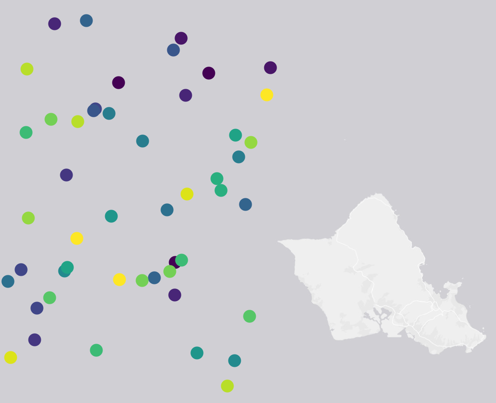
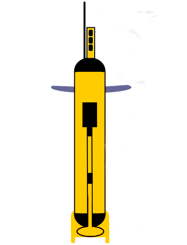

HOT¶
| Datset Name | Spatial Coverage | Sensor Type | Make | Spatial Resolution | Temporal Resolution | Start Date | End Date |
|---|---|---|---|---|---|---|---|
| HOT |  |  | Observation | Irregular | Irregular | 1988-10-31 | 2017-11-09 |
{kind=link}
{kind=link}
Dataset Description¶
HOT_PP
Photosynthetic production of organic matter was measured by the 14C tracer method. All incubations from 1990 through mid-2000 were conducted in situ at eight depths (5, 25, 45, 75, 100, 125, 150 and 175m) over one daylight period using a free-drifting array as described by Winn et al. (1991). Starting HOT-119 (October 2000), we collected samples from only the upper six depths & modeled the lower two depths based on the monthly climatology. During 2015, all incubations were conducted in situ on a free floating, surface tethered array. Integrated carbon assimilation rates were calculated using the trapezoid rule with the shallowest value extended to 0 meters and the deepest extrapolated to a value of zero at 200 meters.
HOT_ParticleFlux
Particle flux was measured at a standard reference depth of 150 m using multiple cylindrical particle interceptor traps deployed on a free-floating array for approximately 60 h during each cruise. Sediment trap design and collection methods are described in Winn et al. (1991). Samples were analyzed for particulate C, N, P & Si. Typically six traps are analyzed for PC and PN, three for PP, and another three traps for PSi.
HOT_Macrozooplankton
Mesozooplankton (weak swimmers 0.2-20 mm size) are collected using oblique tows of a 1-m2 net (202-µm mesh netting) from the surface to approximately 175 m depth. The catch is size fractionated by washing through a nested set of net filters and each fraction analyzed for dry weight, C and N.
HOT_EpiMicroscopy
Water samples of 50 ml (nanoplankton) and 300-500 ml (microplankton) are taken at each of 8 depths in the euphotic zone (surface to 175 m) from the same CTD profiles (and bottles) that sample the microbial community by HPLC pigments and flow cytometry. The 50-ml samples are preserved with 2-ml of 10% paraformaldehyde and stained with proflavin (0.33% w/v). The larger samples are preserved with 300 µl of alkaline Lugols solution followed by 10 ml of buffered formalin and 500 µl of sodium thiosulfate (modified protocol from Sherr and Sherr, 1993); and then stained with proflavin (0.33% w/v). Preserved samples are slowly (~5 psi) filtered onto either black 0.8-µm (50 ml) or 8.0-µm (300-500 ml) Nuclepore filters overlaying 20-µm Millipore backing filters to facilitate even cell distributions. During filtration, the samples are drawn down until approximately 1-2 ml remain in the filtration tower. Concentrated DAPI (50 mg ml-1) is added and allowed to sit briefly before filtering the remainder of the sample until dry. Filters are mounted onto glass slides with immersion oil and cover slips. Prepared slides are placed in a dark box and kept frozen at -80 C until analysis.
HOT_CTD
The majority of our sampling effort, approximately 60-72 h per standard HOT cruise, is spent at Station ALOHA. High vertical resolution environmental data are collected with a Sea-Bird CTD having external temperature (T), conductivity (C), dissolved oxygen (DO) and fluorescence (F) sensors and an internal pressure (P) sensor. A Sea-Bird 24-place carousel and an aluminum rosette that is capable of supporting 24 12-L PVC bottles are used to obtain water samples from desired depths. The CTD and rosette are deployed on a 3-conductor cable allowing for real-time display of data and for tripping the bottles at specific depths of interest. The CTD system takes 24 samples s-1 and the raw data are stored both on the computer and, for redundancy, on VHS-format video tapes.In February 2006, before cruise 178, we replaced our 24 aging 12-L PVC rosette bottles with new 12-L bottles fabricated at the University of Hawaii Engineering Support Facility, using plans and specifications from John Bullister (PMEL).
HOT_Bottle_ALOHA
Sampling at Station ALOHA typically begins with sediment trap deployment followed by a deep (> 4700 m) CTD cast and a “burst series” of at least 13 consecutive 1000 m casts, on 3-h intervals, to span the local inertial period (~ 31 h) and three semidiurnal tidal cycles. The repeated CTD casts enable us to calculate an average density profile from which variability on tidal and near-inertial time scales has been removed. These average density profiles are useful for the comparison of dynamic height and for the comparison of the depth distribution of chemical parameters from different casts and at monthly intervals. This sampling strategy is designed to assess variability on time scales of a few hours to a few years. Very high frequency variability (< 6 h) and variability on time scales of between 3-60 d are not adequately sampled with our ship-based operations.Water samples for a variety of chemical and biological measurements are routinely collected from the surface to within 10 m of the seafloor. To the extent possible, we collect samples for complementary biogeochemical measurements from the same or from contiguous casts to minimize aliasing caused by time-dependent changes in the density field. This approach is especially important for samples collected in the upper 350 m of the water column. Furthermore, we attempt to sample from common depths and specific density horizons each month to facilitate comparisons between cruises. Water samples for salinity determinations are collected from every water bottle to identify sampling errors. Approximately 20% of the water samples are collected and analyzed in duplicate or triplicate to assess and track our precision in sample analyses.At Stations Kahe, ALOHA and Kaena, water samples for chemical analyses were collected from discrete depths using 12 liter PVC bottles with nylon coated internal springs as closing mechanisms. Sampling strategies and procedures are well documented in the previous Data Reports and in the HOT Program Field and Laboratory Protocols manual.
Data Source¶
http://hahana.soest.hawaii.edu/hot/hot-dogs/
http://hahana.soest.hawaii.edu/hot/methods/pprod.html
http://hahana.soest.hawaii.edu/hot/methods/pflux.html
http://hahana.soest.hawaii.edu/hot/methods/plankton.html
Al-Mutairi, H. and M.R. Landry. 2001. Active export of carbon and nitrogen at Station ALOHA by diel migrant zooplankton. Deep-Sea Res. II. 48: 2083- 2104.
http://hahana.soest.hawaii.edu/hot/methods/epimicros.html
Eppley, R.W., F.M.H. Reid and J.D.H. Strickland. 1970. Estimates of phytoplankton crop size, growth rate, and primary production, in The Ecology of the Plankton off La Jolla California in the Period April Through September, 1967, edited by H. J. D. Strickland, Bull. Scripps Inst. Oceanogr. 17, 33-42.